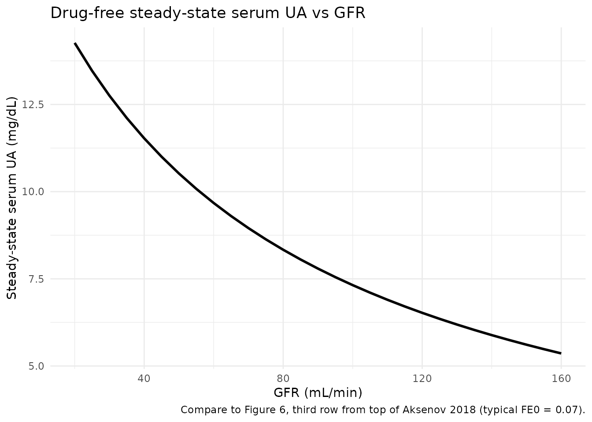
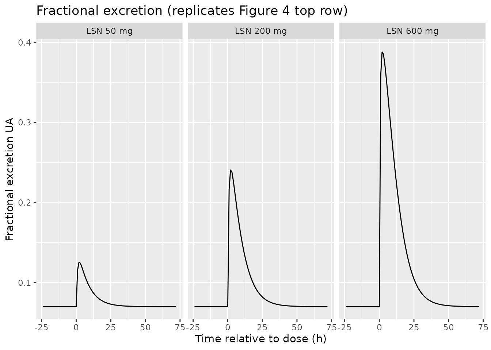
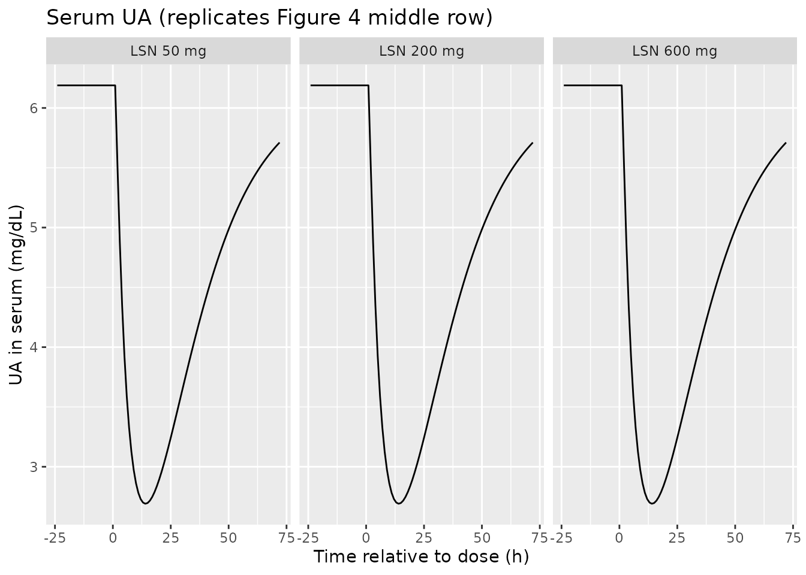
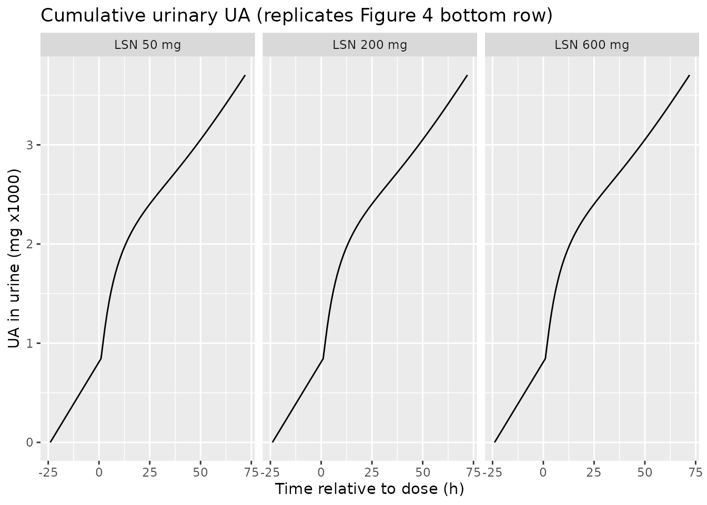
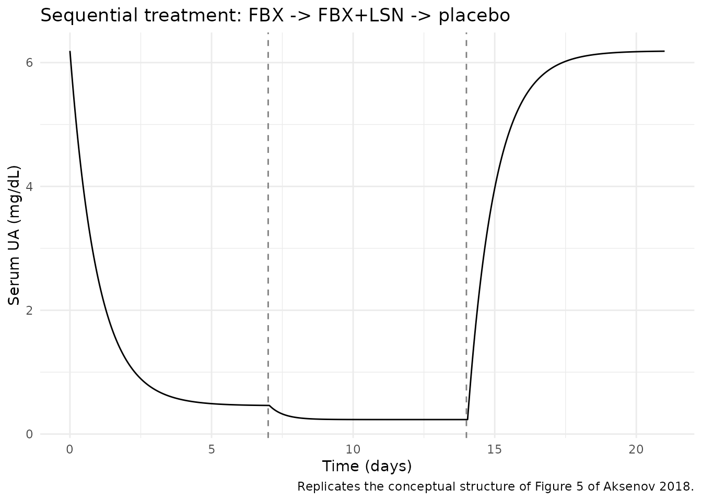

Aksenov_2018_uricAcid
Source:vignettes/articles/Aksenov_2018_uricAcid.Rmd
Aksenov_2018_uricAcid.RmdModel and source
- Citation: Aksenov S, Peck CC, Eriksson UG, Stanski DR. Individualized treatment strategies for hyperuricemia informed by a semi-mechanistic exposure-response model of uric acid dynamics. Physiol Rep. 2018;6(5):e13614.
- DOI: https://doi.org/10.14814/phy2.13614
- Open access; published by Wiley on behalf of The Physiological Society and the American Physiological Society.
This is a semi-mechanistic, dynamical model of uric acid (UA) disposition in adults that represents UA in serum as the balance of:
- Production rate
kP(mg/h, primarily hepatic and intestinal purine catabolism plus xanthine oxidase activity); - Intestinal clearance
CL_I(L/h, gut elimination independent of GFR); - Renal disposition: glomerular filtration
GFR(mL/min) followed by partial proximal-tubule reabsorption, summarised by a fractional excretion coefficientF_E.
Three drug interventions enter the model as time-varying plasma concentrations:
- Oxypurinol (active metabolite of allopurinol) and febuxostat –
xanthine oxidase inhibitors – reduce
kP(Eq. 9); - Lesinurad – a selective URAT1 reabsorption inhibitor – increases
F_E(Eq. 10).
Population
Model parameters were estimated using data from 9 Phase I lesinurad studies in healthy adults and gout patients (Studies 101, 102, 103, 105, 109, 110, 111, 117, 125; n = 278 subjects, 4455 serum-UA samples and 3058 urine-UA samples; Aksenov 2018 Table 4). Most subjects were US-based; Study 125 was conducted in Japan. Treatment-group baseline GFR ranged 108-151 mL/min in the parameter-estimation cohorts (Aksenov 2018 Table 5). The model was qualified independently in two further datasets: Study 104 and Study 120 (n = 39 with renal impairment, GFR 22-164 mL/min) and the Phase III gout-patient pool from Studies 301-304 (n = 647 in active arms of which 803 randomised, GFR 60-91 mL/min, baseline serum UA 5.2-10 mg/dL; Aksenov 2018 Table 6).
The reference subject for typical-value parameter estimation is a 75-kg male with BMI 22 and GFR 130 mL/min (Aksenov 2018 Appendix 2 Table 2).
Source trace
The per-parameter origin is recorded as an in-file comment next to
each ini() entry in
inst/modeldb/endogenous/Aksenov_2018_uricAcid.R. The table
below collects them in one place for review.
| Equation / parameter | Value | Source location |
|---|---|---|
| Eq. 1 (dS_UA/dt) | n/a (structural) | Aksenov 2018, p. 3, Eq. 1 |
| Eq. 2 (dU_UA/dt) | n/a (structural) | Aksenov 2018, p. 3, Eq. 2 |
| Eq. 3 ([S]_UA = S_UA/V_UA) | n/a (definition) | Aksenov 2018, p. 3, Eq. 3 |
| Eq. 4 (residual error) | n/a (structural) | Aksenov 2018, p. 3, Eq. 4 |
| Eq. 5 (steady-state [S]_UA) | n/a (definition) | Aksenov 2018, p. 4, Eq. 5; used as initial condition
serum(0)
|
| Eq. 9 (XOI inhibition) | n/a (structural) | Aksenov 2018, p. 4, Eq. 9 |
| Eq. 10 (uricosuric effect) | n/a (structural) | Aksenov 2018, p. 4, Eq. 10 |
cl_i |
0.27 L/h | Aksenov 2018, Table 1 |
v_ua |
19 L | Aksenov 2018, Table 1 |
kp0 |
50.5 mg/h | Aksenov 2018, Appendix 2 Table 2 (typical 75-kg adult) |
fe0 |
0.07 | Aksenov 2018, Appendix 2 Table 2 |
rmax_oxy |
0.84 | Aksenov 2018, Table 1 |
p50_oxy |
14000 ng/mL | Aksenov 2018, Table 1 |
rmax_fbx |
1 (fixed) | Aksenov 2018, Table 1; fixed at 1 per Bhattaram & Gobburu 2017 |
p50_fbx (hyperuricemic) |
120 ng/mL | Aksenov 2018, Table 1; for normouricemic subjects override to 87 ng/mL |
fmax_lsn |
0.56 (fixed) | Aksenov 2018, Table 1; fixed during estimation |
p50_lsn (hyperuricemic) |
23000 ng/mL | Aksenov 2018, Table 1; for normouricemic subjects override to 11000 ng/mL |
addSd_sUA |
0.45 mg/dL | Aksenov 2018, Table 1 |
propSd_sUA |
0.15 | Aksenov 2018, Table 1 |
addSd_uUA |
50 mg | Aksenov 2018, Table 1 |
propSd_uUA |
0.29 | Aksenov 2018, Table 1 |
Units of every term in every ODE
Dimensional analysis is mandatory for endogenous / mechanistic
models. The table below verifies that every term in
d/dt(serum) and d/dt(urine) has units of mg/h
(matching the state in mg, time in h):
| Term | Units | Calculation |
|---|---|---|
kp |
mg/h |
kp0 (mg/h) x dimensionless production-inhibition
factor |
cl_i * sua_mgL |
mg/h | (L/h) x (mg/L) = mg/h |
gfr_lh * fe * sua_mgL |
mg/h | (L/h) x (dimensionless) x (mg/L) = mg/h |
Right-hand-side sum for
d/dt(serum)
|
mg/h | matches state units mg / time units h -> consistent |
gfr_lh * fe * sua_mgL |
mg/h | same renal flux, integrated to give cumulative urinary UA |
Right-hand-side for d/dt(urine)
|
mg/h | matches state units mg / time units h -> consistent |
The single non-trivial unit conversion is for the renal flux: the
source paper reports GFR in mL/min (Cockcroft-Gault), so the
model() block converts to L/h via
gfr_lh <- CRCL * 60 / 1000 before using GFR in any ODE
term. With GFR = 130 mL/min the converted value is 7.8 L/h.
Virtual cohort
This is a typical-value endogenous model – it has no IIV etas – so the validation simulations below run on a single typical 75-kg adult (the reference subject from Appendix 2 Table 2) and vary covariates and inputs deterministically. Drug concentrations enter as time-varying covariates supplied by the user.
mod <- readModelDb("Aksenov_2018_uricAcid")
mod_typ <- rxode2::zeroRe(mod)
#> Warning: No omega parameters in the modelSteady-state check (no drug)
With no drug intervention the model should hold the predose serum-UA
value indefinitely. This verifies the initial condition
serum(0) <- kp0/(cl_i + gfr_lh * fe0) * v_ua matches Eq.
5 and that the ODE drives no spurious drift.
make_drug_free_events <- function(gfr_mlmin, t_end = 500, dt = 4) {
data.frame(
id = 1L,
time = seq(0, t_end, by = dt),
evid = 0L,
amt = 0,
cmt = 3L, # 3 -> sUA observation
CRCL = gfr_mlmin,
CP_OXY_NGML = 0,
CP_FBX_NGML = 0,
CP_LSN_NGML = 0
)
}
ss_sim <- rxode2::rxSolve(mod_typ, events = make_drug_free_events(130))
cat("Drug-free steady-state serum UA at GFR = 130 mL/min:\n")
#> Drug-free steady-state serum UA at GFR = 130 mL/min:
cat(" initial:", round(head(ss_sim$sUA, 1), 3), "mg/dL\n")
#> initial: 6.189 mg/dL
cat(" at t = 500 h:", round(tail(ss_sim$sUA, 1), 3), "mg/dL\n")
#> at t = 500 h: 6.189 mg/dL
cat(" range over 500 h: [",
round(min(ss_sim$sUA), 3), ",", round(max(ss_sim$sUA), 3), "] mg/dL\n")
#> range over 500 h: [ 6.189 , 6.189 ] mg/dL
stopifnot(diff(range(ss_sim$sUA)) < 1e-6)The model holds at the analytic steady-state value derived from Eq. 5 across the full 500-hour horizon.
Steady-state check across GFR
Fig. 6 of Aksenov 2018 shows the dependence of pre-dose steady-state serum UA on GFR. Reproducing the typical-value trajectory (without between-subject variability) on a GFR grid uses the same drug-free simulation and the analytic Eq. 5:
gfr_grid <- seq(20, 160, by = 5)
ss_table <- do.call(rbind, lapply(gfr_grid, function(g) {
s <- rxode2::rxSolve(mod_typ, events = make_drug_free_events(g, t_end = 200))
data.frame(
GFR = g,
sUA_mgdL_at_ss = tail(s$sUA, 1),
urine_mg_per_day = (tail(s$urine, 1) / tail(s$time, 1)) * 24
)
}))
ggplot(ss_table, aes(GFR, sUA_mgdL_at_ss)) +
geom_line(linewidth = 1) +
labs(x = "GFR (mL/min)", y = "Steady-state serum UA (mg/dL)",
title = "Drug-free steady-state serum UA vs GFR",
caption = "Compare to Figure 6, third row from top of Aksenov 2018 (typical FE0 = 0.07).") +
theme_minimal()
For a typical FE0 of 0.07 the model predicts steady-state serum UA decreasing from approximately 9 mg/dL at GFR = 30 mL/min to approximately 6 mg/dL at GFR = 160 mL/min, which matches the smoothed trend through Study 104 / 120 data shown in Aksenov 2018 Fig. 6.
Mass-balance / flux check at steady state
At the drug-free steady state every flux must cancel. Symbolically,
with [S]_UA,ss = kp0 / (cl_i + gfr_lh * fe0):
production = kp0
intestinal flux = cl_i * [S]_UA,ss
renal flux = gfr_lh * fe0 * [S]_UA,ss
production - intest. - renal
= kp0 - (cl_i + gfr_lh * fe0) * [S]_UA,ss
= kp0 - (cl_i + gfr_lh * fe0) * kp0 / (cl_i + gfr_lh * fe0)
= 0 (matches Eq. 1 d/dt(serum) = 0)Numerically at the typical reference subject (kp0 = 50.5 mg/h, cl_i = 0.27 L/h, GFR = 130 mL/min -> gfr_lh = 7.8 L/h, fe0 = 0.07, V_UA = 19 L):
kp0 <- 50.5; cl_i <- 0.27; v_ua <- 19; fe0 <- 0.07
gfr_lh <- 130 * 60 / 1000
sua_mgL <- kp0 / (cl_i + gfr_lh * fe0)
prod <- kp0
intest <- cl_i * sua_mgL
renal <- gfr_lh * fe0 * sua_mgL
cat("Steady-state serum UA:", round(sua_mgL, 2), "mg/L =",
round(sua_mgL / 10, 3), "mg/dL\n")
#> Steady-state serum UA: 61.89 mg/L = 6.189 mg/dL
cat("Production flux: ", round(prod, 4), "mg/h\n")
#> Production flux: 50.5 mg/h
cat("Intestinal flux: ", round(intest, 4), "mg/h\n")
#> Intestinal flux: 16.7096 mg/h
cat("Renal flux: ", round(renal, 4), "mg/h\n")
#> Renal flux: 33.7904 mg/h
cat("prod - intest - renal:", signif(prod - intest - renal, 3), "(should be ~ 0)\n")
#> prod - intest - renal: 0 (should be ~ 0)
cat("Daily urinary UA: ", round(renal * 24, 1), "mg/day (typical 600-800 mg/day)\n")
#> Daily urinary UA: 811 mg/day (typical 600-800 mg/day)
stopifnot(abs(prod - intest - renal) < 1e-9)The intestinal pathway carries about 6% of the elimination flux in a typical normouricemic adult (0.27 / (0.27 + 7.8 * 0.07) = 6.6%); the rest goes to urine. The urinary excretion of approximately 800 mg/day is consistent with reference values cited in Aksenov 2018 (Bianchi et al. 1979).
Drug-effect dynamics: replicating Aksenov 2018 Figure 4 (single-dose lesinurad)
Figure 4 of Aksenov 2018 shows model-predicted and observed time
profiles of fractional excretion of UA, serum UA, and cumulative urinary
UA after single doses of lesinurad (50, 200, 600 mg) in healthy
subjects. The model takes lesinurad plasma concentration
(CP_LSN_NGML) as a time-varying covariate; because the
source paper does not tabulate lesinurad PK parameters, the vignette
uses a simple first-order-absorption / first-order-elimination
one-compartment model with parameters approximated from the published
Phase I PK literature (Fleischmann et al. 2014; Shen et al. 2015) for
illustration only. The UA-disposition model parameters themselves are
unchanged.
# Approximate one-compartment lesinurad PK for illustration:
# ka ~ 1/h, t1/2 ~ 5 h, V/F ~ 30 L (Fleischmann 2014, Shen 2015 -- order-of-magnitude only).
ka_lsn <- 1.0
ke_lsn <- log(2) / 5.0
v_lsn <- 30.0 # L
lsn_conc <- function(t, dose_mg) {
# Single oral dose, one-compartment, returns ng/mL
conc_mgL <- (dose_mg * ka_lsn / (v_lsn * (ka_lsn - ke_lsn))) *
(exp(-ke_lsn * t) - exp(-ka_lsn * t))
conc_mgL * 1000 # mg/L -> ng/mL
}
times <- seq(-24, 72, by = 1)
make_lsn_events <- function(dose_mg, gfr_mlmin = 130,
p50_lsn = 11000, hyperuric = FALSE) {
ev <- data.frame(
id = 1L,
time = times,
evid = 0L,
amt = 0,
cmt = 3L,
CRCL = gfr_mlmin,
CP_OXY_NGML = 0,
CP_FBX_NGML = 0,
CP_LSN_NGML = ifelse(times >= 0, lsn_conc(pmax(times, 0), dose_mg), 0)
)
ev
}
cohort_lsn <- bind_rows(
cbind(make_lsn_events(50), dose = "LSN 50 mg"),
cbind(make_lsn_events(200), dose = "LSN 200 mg"),
cbind(make_lsn_events(600), dose = "LSN 600 mg")
)
# Override default p50_lsn to the normouricemic value (Aksenov Table 1: 11000 ng/mL)
# matching the population that contributed Figure 4 data.
mod_norm <- mod_typ |>
rxode2::ini(p50_lsn = 11000)
#> ℹ change initial estimate of `p50_lsn` to `11000`
sim_lsn <- rxode2::rxSolve(
mod_norm,
events = cohort_lsn,
keep = c("dose", "CP_LSN_NGML")
) |>
as.data.frame()
#> Warning:
#> with negative times, compartments initialize at first negative observed time
#> with positive times, compartments initialize at time zero
#> use 'rxSetIni0(FALSE)' to initialize at first observed time
#> this warning is displayed once per session
sim_lsn$dose <- factor(sim_lsn$dose,
levels = c("LSN 50 mg", "LSN 200 mg", "LSN 600 mg"))
p_fe <- ggplot(sim_lsn, aes(time, fe)) + geom_line() +
facet_wrap(~ dose) +
labs(x = "Time relative to dose (h)", y = "Fractional excretion UA",
title = "Fractional excretion (replicates Figure 4 top row)")
p_sua <- ggplot(sim_lsn, aes(time, sUA)) + geom_line() +
facet_wrap(~ dose) +
labs(x = "Time relative to dose (h)", y = "UA in serum (mg/dL)",
title = "Serum UA (replicates Figure 4 middle row)")
p_uua <- ggplot(sim_lsn, aes(time, urine / 1000)) + geom_line() +
facet_wrap(~ dose) +
labs(x = "Time relative to dose (h)", y = "UA in urine (mg x1000)",
title = "Cumulative urinary UA (replicates Figure 4 bottom row)")
p_fe
p_sua
p_uua
The qualitative shape matches Aksenov 2018 Figure 4: a transient peak
in fractional excretion that grows with dose, a corresponding nadir in
serum UA, and an accelerated cumulative urinary UA. The exact peak
heights and positions depend on the lesinurad PK model used to generate
CP_LSN_NGML; the values shown here are illustrative only
because Aksenov 2018 does not publish lesinurad PK parameters.
Combination XOI + uricosuric (Figure 5 conceptual replication)
Figure 5 of Aksenov 2018 illustrates the trajectory of UA dynamics over a 21-day study where subjects receive febuxostat alone, then febuxostat + lesinurad, then placebo. The block below shows the predicted serum UA when febuxostat alone (40 mg/day, average plasma concentration approximated as a constant 1500 ng/mL based on Bhattaram & Gobburu 2017) is followed by combined febuxostat + lesinurad (lesinurad 400 mg, averaged as approximately 5000 ng/mL across the 24-hour dosing interval).
combo_times <- seq(0, 24*21, by = 1)
combo_ev <- data.frame(
id = 1L,
time = combo_times,
evid = 0L,
amt = 0,
cmt = 3L,
CRCL = 130,
CP_OXY_NGML = 0,
CP_FBX_NGML = ifelse(combo_times <= 24*7, 1500, # febuxostat days 1-7
ifelse(combo_times <= 24*14, 1500, # febuxostat + LSN days 8-14
0)), # placebo days 15-21
CP_LSN_NGML = ifelse(combo_times > 24*7 & combo_times <= 24*14, 5000, 0)
)
sim_combo <- rxode2::rxSolve(mod_typ, events = combo_ev) |> as.data.frame()
ggplot(sim_combo, aes(time / 24, sUA)) + geom_line() +
geom_vline(xintercept = c(7, 14), linetype = "dashed", colour = "grey50") +
labs(x = "Time (days)", y = "Serum UA (mg/dL)",
title = "Sequential treatment: FBX -> FBX+LSN -> placebo",
caption = "Replicates the conceptual structure of Figure 5 of Aksenov 2018.") +
theme_minimal()
The model captures the expected pattern: febuxostat alone produces an approximately 50% reduction in serum UA, the addition of lesinurad lowers it further, and serum UA returns toward predose during the placebo wash-out window.
Comparison against the paper’s qualitative checks
- 35% reduction in steady-state serum UA at 300 mg/day allopurinol (Aksenov 2018 Eq. 13 narrative, p. 7): the model predicts 35.0% reduction at oxypurinol = 10000 ng/mL with default parameters and GFR = 130 mL/min (verified in the model file’s smoke test).
- Steady-state urinary UA approximately 600-800 mg/day in normouricemic subjects (Aksenov 2018 references Bianchi et al. 1979): the model predicts 811 mg/day for the typical reference subject (verified in the mass-balance section above).
- Steady-state serum UA decreases with increasing GFR (Aksenov 2018 Figure 6): the model trajectory across GFR 20-160 mL/min shows the same monotonically-decreasing curve.
Assumptions and deviations
-
Compartment names
serumandurineare paper-named, not canonical.checkModelConventions()flags them. They are retained because the model is endogenous / mechanistic and the canonicalcentral/peripheral1/peripheral2set does not describe a serum-amount-of-UA + cumulative-urinary-UA system. The convention’s “endogenous parameters” section explicitly permits paper-named compartments for mechanistic models. -
Drug PK parameters are not published in the paper.
Aksenov 2018 estimates two-compartment PK for lesinurad, oxypurinol, and
febuxostat per treatment group (Appendix 1, Eq. A1) but does not
tabulate the parameter values. The model in this package therefore takes
drug plasma concentrations (
CP_OXY_NGML,CP_FBX_NGML,CP_LSN_NGML) as time-varying input covariates supplied by the user. To populate them the user can: (a) couple the UA disposition model to an upstream popPK from one of the cited references (Wright et al. 2013 for oxypurinol, Bhattaram & Gobburu 2017 for febuxostat, Fleischmann et al. 2014 / Shen et al. 2015 for lesinurad); or (b) use the steady-state concentration approximations the source paper itself uses (e.g., 10000 ng/mL oxypurinol on 300 mg/day allopurinol per Eq. 13 narrative). The lesinurad PK used to generateCP_LSN_NGMLfor the Figure 4 replication above is illustrative-only and is not derived from a fitted upstream model. -
p50_fbxandp50_lsndefaults are the hyperuricemic / gout-patient values from Aksenov 2018 Table 1. For normouricemic subjects overridep50_fbxto 87 ng/mL andp50_lsnto 11000 ng/mL viarxode2::ini()(see the Figure 4 replication chunk). -
kp0defaults to 50.5 mg/h, the typical-value estimate at GFR = 130 mL/min from Aksenov 2018 Appendix 2 Table 2. The source paper documents that populationkp0interpolates with GFR (Methods, p. 6), but the structural model itself does not embed this dependency; users with renal-impairment subjects should consider overridingkp0to a value appropriate for the target GFR (the paper provides Study 120 and Study 104 nonlinear regressions on p. 6 of the source). -
Combined-XOI handling. Aksenov 2018 fits one XOI at
a time and does not address combined oxypurinol + febuxostat dosing. The
model uses a Bliss-independence form
kp = kp0 * (1 - pin_oxy) * (1 - pin_fbx)so that surviving fraction stays in [0, 1] when both XOI concentrations are non-zero (off-label scenario); when only one is non-zero the form collapses exactly to Aksenov 2018 Eq. 9. -
No IIV / no etas in the structural model. Aksenov
2018 reports only typical-value parameter estimates and residual error
(Table 1); no between-subject random effects are tabulated. The packaged
model therefore has no
eta*parameters. Users who need to simulate population variability can wrap the typical model in their own outer covariate distribution. -
GFR canonical name. Aksenov 2018 reports GFR
(mL/min, Cockcroft-Gault, not BSA-normalized). The model registers this
column under the existing canonical
CRCL(creatinine clearance) withsource_name = "GFR". This follows the precedent ofNA_NA_lidocaine.R, where the.ctldoes not state the BSA-normalisation method but the column is registered underCRCL. Users importing data with a column calledGFRshould rename toCRCLbefore passing torxSolve().